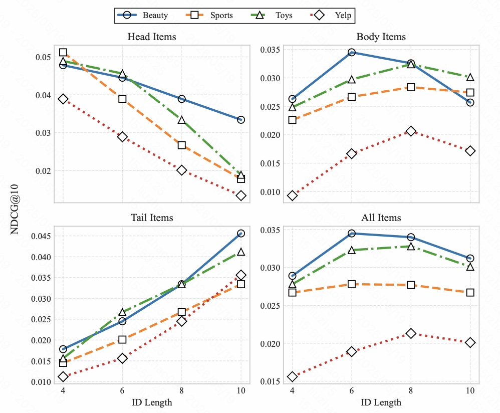
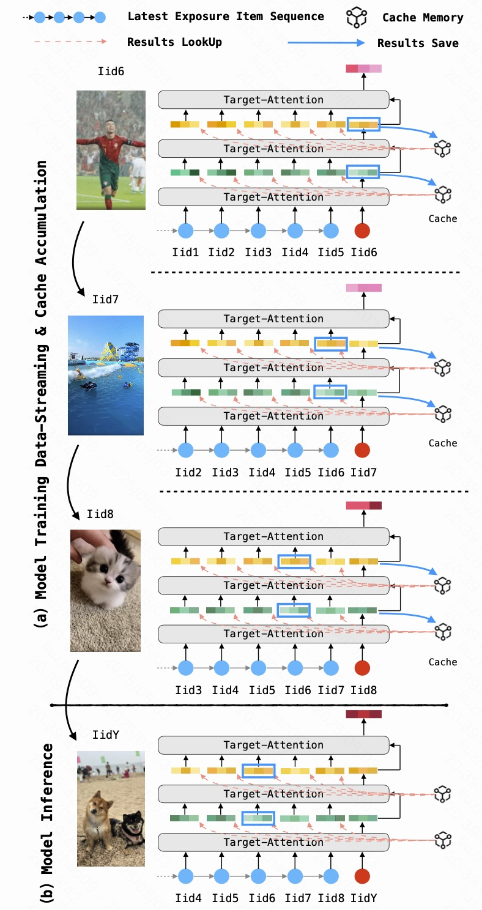
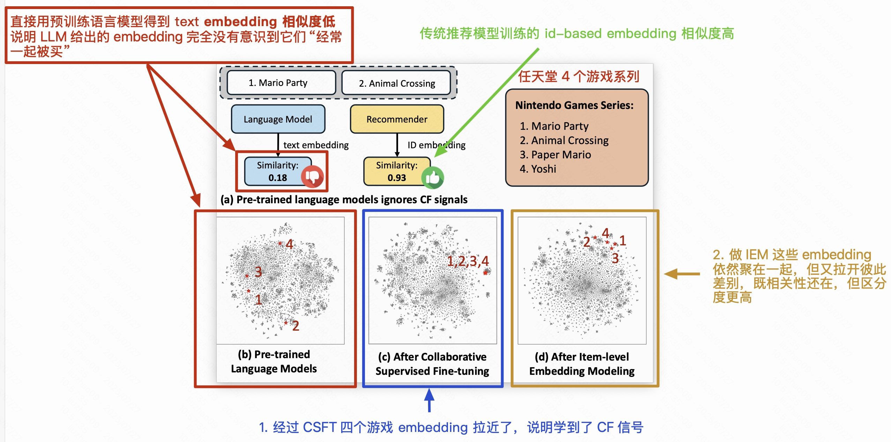

VarLenRec: Learning Variable-Length Tokenization for Generative Recommendation
让语义 ID 长度按商品流行度和语义复杂度自适应分配，缓解固定长度 ID 的头尾冲突。
生成式推荐Semantic ID变长 Tokenization长尾推荐
阅读笔记
Paper Library
先挂载几篇本地 Markdown 笔记。每篇详情页保留正文主线，并补充目录、侧栏和站点图片路径。

让语义 ID 长度按商品流行度和语义复杂度自适应分配，缓解固定长度 ID 的头尾冲突。

端侧轻量 LLM 将用户最近行为压缩成显式 query/tags，再接入云端召回系统。

把推荐问题从候选匹配改写为语义 ID 生成，是生成式推荐的重要起点。


探索如何让 LLM 同时捕获协同过滤信号和文本语义，成为推荐系统的 embedding model。